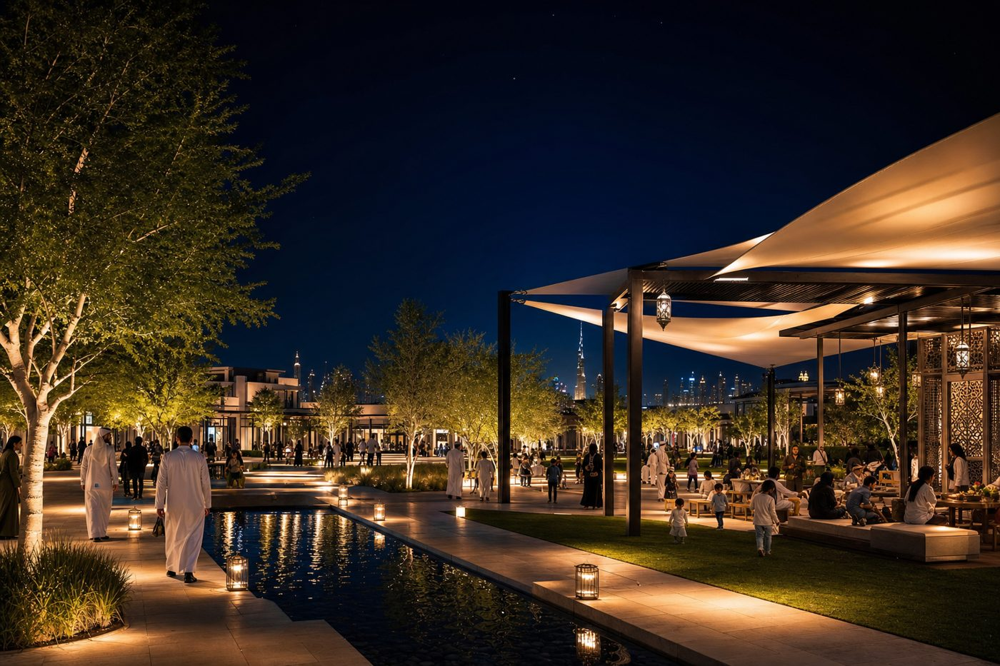
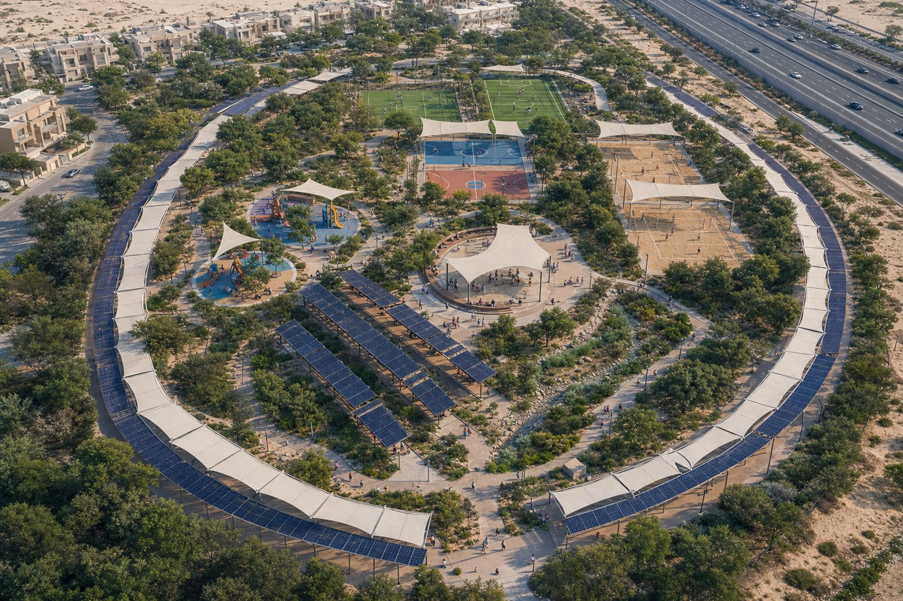
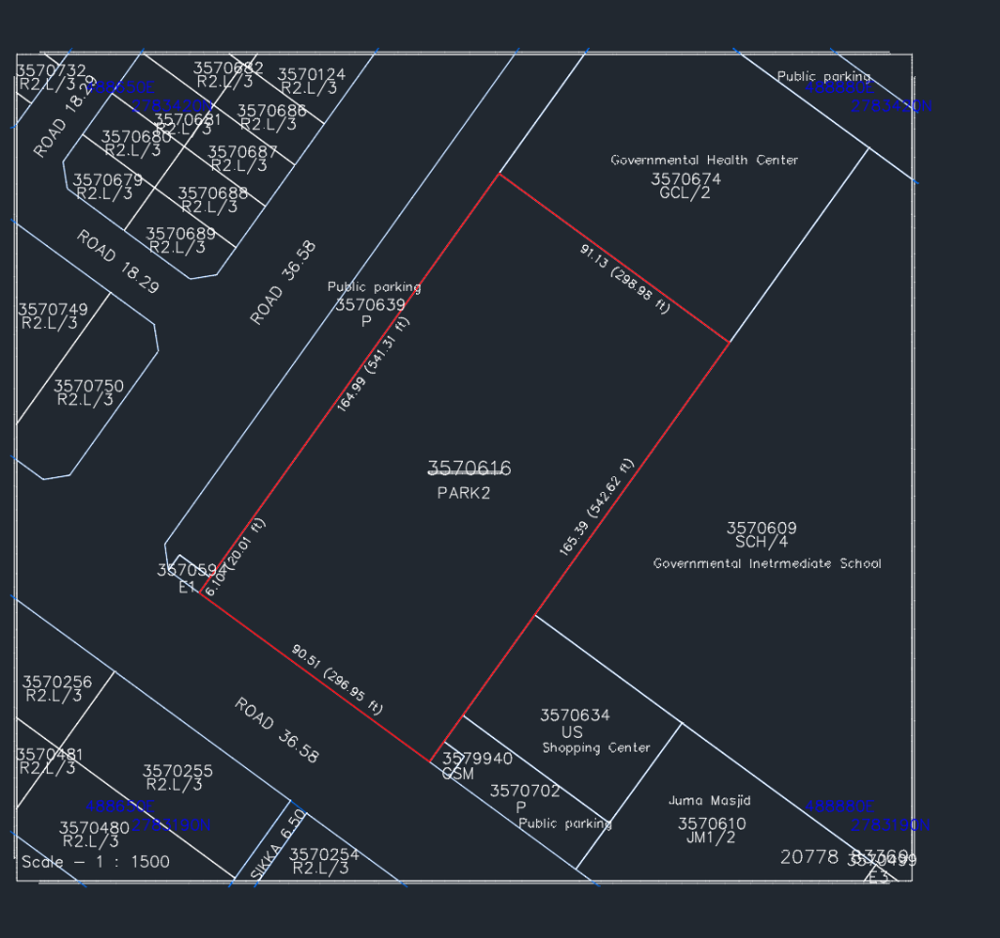
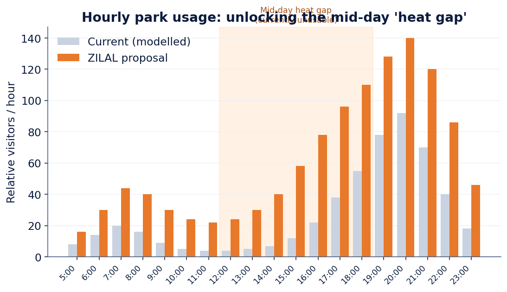
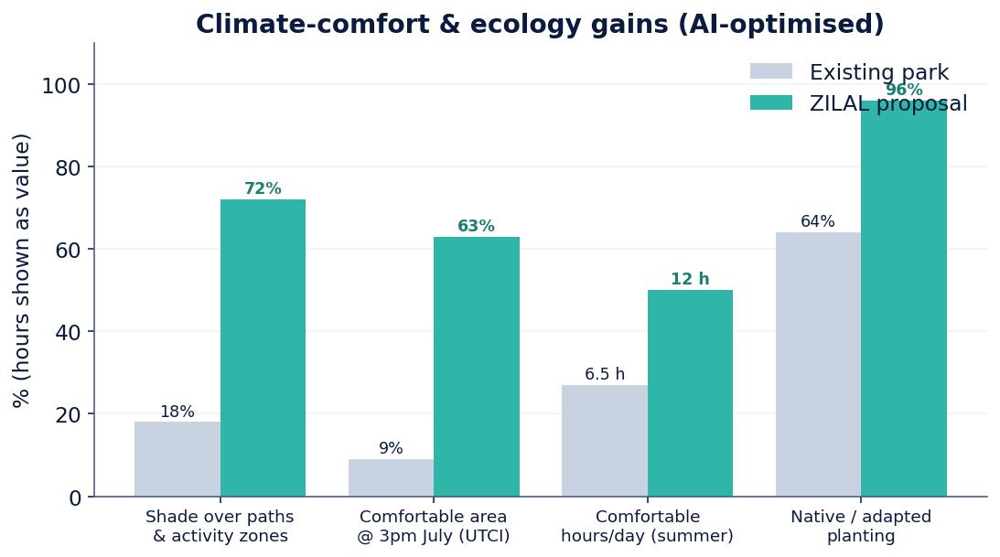
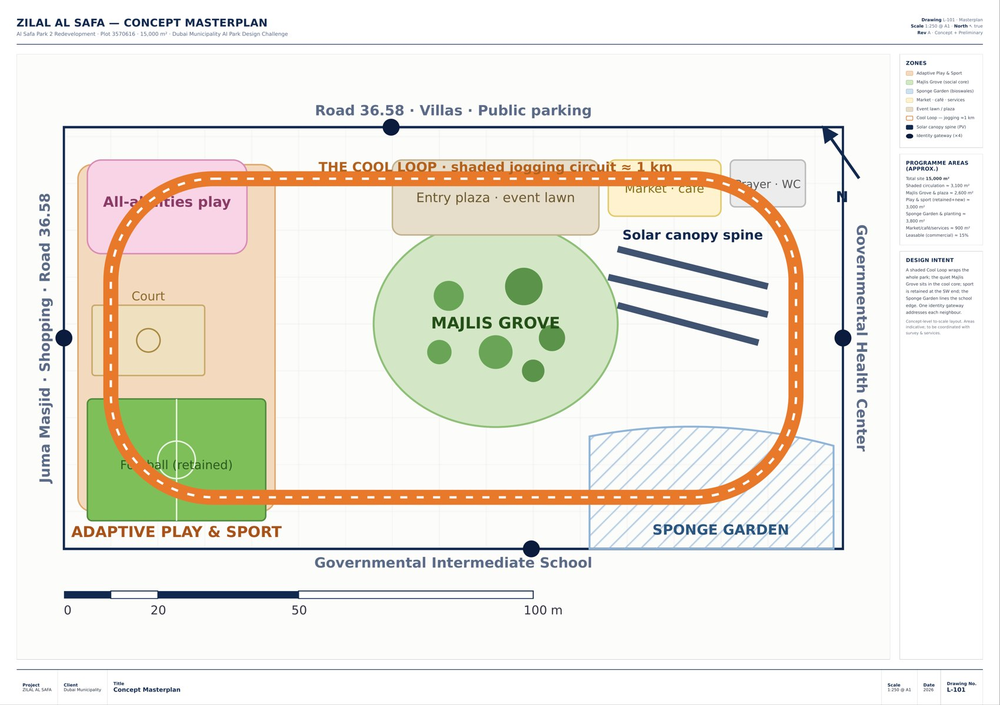
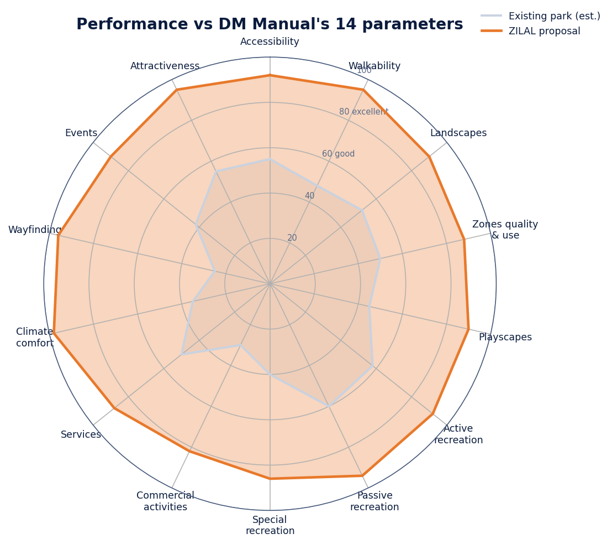

Experience · Day & Night
A park for every hour
05 / 08
Human-centredConcept visualisations



ZILAL AL SAFA · Day & Night PerspectivesSections L-301 accompany this boardBoard 05

ẓilāl — “shades / canopies”. An AI-designed, self-cooling neighbourhood oasis that turns a park the desert heat closes for half the day into a place that works all day, all year.
Today usage collapses at midday and peaks only near 6 pm. Our single goal: reclaim the lost hours — with AI placing every path, canopy and tree where the data does the most good.
A continuous, fully-shaded ~1 km walk/run/cycle circuit under solar pergolas — AI-tuned to stay in shade at 3 pm in July.
The shaded social heart under a Ghaf & Sidr grove, in the coolest core, tuned to the 6 pm peak.
Existing pitch & court retained and shaded, plus an all-abilities sensory playscape.
Xeriscape, bioswales & water reuse — −41% irrigation while keeping mature trees.
Photovoltaic pergolas shade by day and power lighting, misting & the park app by night — energy net-positive.

Summer midday effectively closes the park ~6 h/day.
Footfall data confirms a sharp evening peak.
Pitch, court & mature canopy kept and enhanced.


Evening picnics — shade, play in sight, prayer & WCs.
After-school football, Wi-Fi & safe lighting.
A daily shaded walk, gentle gradients, quiet green.
Step-free loop, accessible play & sensory garden.
The ~1 km Cool Loop, usable through midday.
Early & late walks — shaded dog run & water.

4 gateways, accessible drop-off, bike parking, event plaza.
~1 km shaded Cool Loop + step-free promenade network.
Retained pitch & court + all-abilities playscape & fitness.
Majlis Grove, picnic lawns, prayer space, events calendar.
Restrooms, drinking fountains, shaded seating ≤ 60 m apart, waste & recycling.
Café & kiosks (~15% leasable) that fund operations.
Active uses face the busy arrival edge; the quiet green core stays cool and calm; the Sponge Garden lines the school edge; one identity gateway addresses each neighbour.

Benchmarked against real built parks (including Dubai Municipality's own Quranic Park) so every “first” holds up — and AI doesn't just draw the park, it runs it.
A live digital twin + AI senses heat, UTCI, wind & footfall and routes you to the coolest seat or lane in real time; auto-tunes misting, irrigation & lighting; gives DM a KPI dashboard.
The heritage screen reimagined as responsive shade that tracks the sun over the Majlis Grove — iconic, photogenic and unmistakably Emirati.
A PV spine shades the Cool Loop and generates more energy than the park uses — powering the tech, EV charging and export.
Footstep-energy tiles under the sports court & a Cool-Loop stretch: players light their own night game; every step is live data. Value = engagement + data, not kWh.
Point a phone at the Ghaf & Sidr trees to unlock augmented-reality Emirati heritage & planting stories — for families and the neighbouring schools.
Software-upgradable and learns each season; open comfort/energy data DM can replicate city-wide — it performs better in year 5 than year 1.
A documented, reproducible six-stage pipeline — AI widens the options and quantifies trade-offs at every step, the design team makes every final decision, and the AI keeps working after opening to run the park.
GIS/QGIS, computer vision, sun-path & wind, footfall & review-sentiment NLP, DWG survey.
Parametric + generative search over paths & canopies for shade, walkability & program mix.
UTCI & shade ray-tracing (Ladybug/Honeybee-type) + pedestrian-flow modelling.
ML dwell-time, capacity & inclusivity coverage — gaps designed out.
Diffusion renders (day & night), data viz, boards, microsite & animation.
A live digital twin runs the built park — routing to shade, auto-tuning systems & learning each season.

Comfort first — Cool Loop, grove, access.
Play, sport, water & kiosks.
Solar spine, smart & events.
| Criterion | Wt | ZILAL's strength |
|---|---|---|
| Innovation & Creativity | 20% | 4 Dubai-firsts: Comfort Brain, kinetic mashrabiya, solar canopy, kinetic floor |
| Human-Centred, Sustainability & QoL | 20% | 5 audiences + PoD; −41% water; net-positive energy |
| Integration & Use of AI | 20% | 6-stage pipeline that also operates the park; human-led |
| Presentation & Communication | 20% | Microsite, boards, data viz, day & night renders, animation |
| Feasibility & Implementation | 15% | AED 35M; phased; reuses courts & trees; commerce funds O&M |
| Quality of Design & UX | 5% | Legible zoning; seamless day-to-night activation |
In one line: a year-round, AI-designed, self-cooling oasis for the whole community — innovative, human-centred, sustainable and buildable within budget.